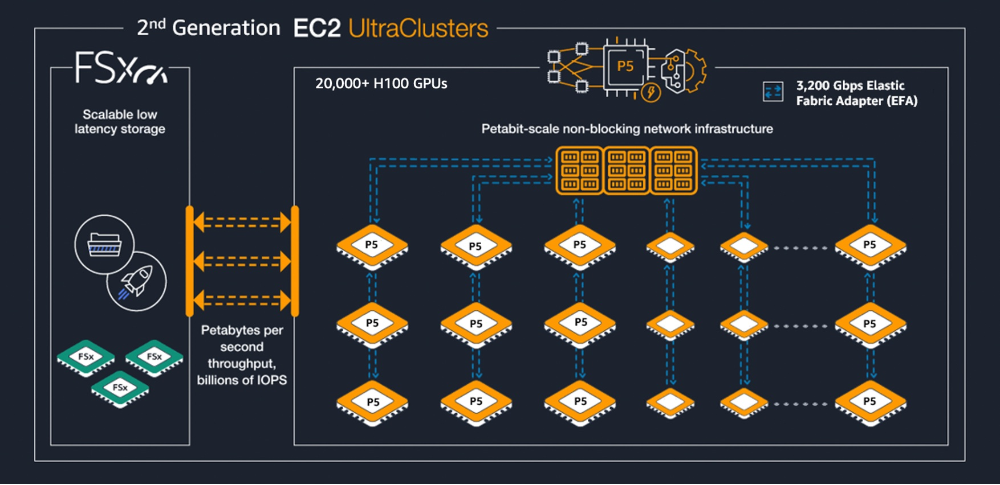
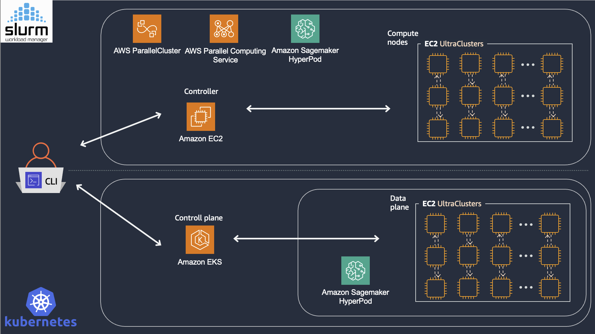
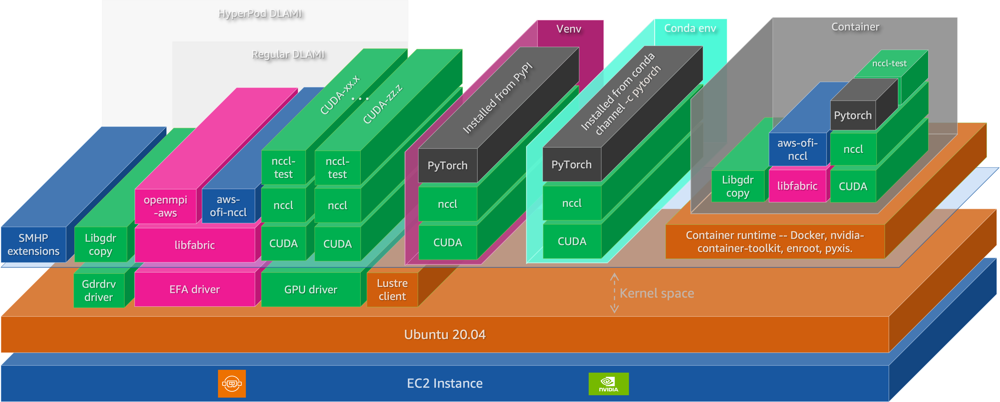
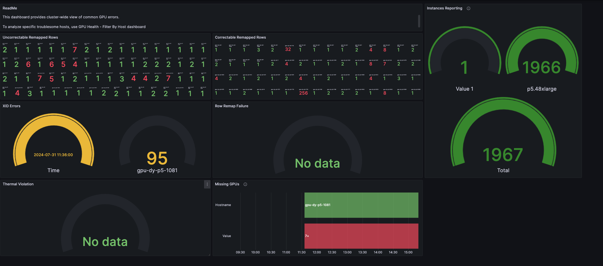

AWS 上的基础模型训练与推理构建模块
文章背景与核心概要
随着基础模型的不断演进，算力扩展已不再局限于单一的预训练规模定律（Scaling Laws）。现代模型的性能高度依赖于三大互补机制：预训练（Pre-training）、后训练（Post-training，如 SFT 和基于强化学习的方法）以及推理时计算（Test-time compute，如搜索、验证和多样本策略）。
尽管范式有所转变，但对基础设施的要求依然保持统一：紧密耦合的加速器计算、高带宽/低提早的（Low-latency）网络以及可扩展的分布式存储后端。本文深入探讨了在 AWS 上高效扩展基础模型训练和推理所需的开源软件（OSS）生态系统与基础设施构建模块。
摘要 (Executive Summary)
As foundation models evolve, scaling is no longer confined to a single pre-training curve. Performance now heavily relies on three complementary regimes: pre-training, post-training (e.g., SFT and RL-based methods), and test-time compute (e.g., search, verification, and multi-sample strategies).
Despite these shifting paradigms, the infrastructure requirements remain unified: tightly coupled accelerator compute, high-bandwidth/low-latency networks, and scalable distributed storage backends. This article explores the open-source software (OSS) ecosystem and AWS infrastructure building blocks required to scale foundation model training and inference efficiently.
随着基础模型的演进，规模扩展已不再局限于单一的预训练曲线。目前的性能高度依赖于三种互补机制：预训练、后训练（例如 SFT 和基于强化学习的方法）以及推理时计算（例如搜索、验证和多样本策略）。
尽管这些范式在不断转变，但基础设施的需求依然统一：紧密耦合的加速器计算、高带宽/低延迟网络以及可扩展的分布式存储后端。本文探讨了高效扩展基础模型训练和推理所需的开源软件（OSS）生态系统与 AWS 基础设施构建模块。
引言：AI 规模扩展格局的变迁 (Introduction: The Changing Landscape of AI Scaling)
Historically, scaling foundation models meant increasing dataset size, model parameters, and training compute, adhering to predictable power-law trends (Kaplan et al., 2020). However, the modern frontier spans three distinct scaling laws:
Figure: Adapted from "AI's Three Scaling Laws, Explained" (NVIDIA Blog).
从历史上看，扩展基础模型意味着增加数据集规模、模型参数和训练算力，并遵循可预测的幂律趋势（Kaplan et al., 2020）。然而，现代的前沿领域涵盖了三种不同的规模定律：
图示： 改编自《AI 的三大规模定律解析》（NVIDIA 博客）。
To manage this complex lifecycle, modern pipelines rely on an open-source software (OSS) stack running atop robust cloud infrastructure: - Cluster Resource Management: Slurm, Kubernetes - Model Development & Training: PyTorch, JAX - Observability: Prometheus, Grafana
+-------------------------------------------------------------+
| Observability Stack |
| (Prometheus / Grafana / DCGM) |
+-------------------------------------------------------------+
| ML Frameworks & Runtimes |
| (PyTorch, JAX, CUDA, Triton, NCCL) |
+-------------------------------------------------------------+
| Resource Orchestration Layer |
| (Slurm / Kubernetes) |
+-------------------------------------------------------------+
| Hardware Infrastructure |
| (EC2 Accelerated Instances, EFA, FSx) |
+-------------------------------------------------------------+
为了管理这一复杂的生命周期，现代流水线依赖于运行在强大云基础设施之上的开源软件（OSS）栈： - 集群资源管理： Slurm、Kubernetes - 模型开发与训练： PyTorch、JAX - 可观测性： Prometheus、Grafana
+-------------------------------------------------------------+ | Observability Stack | | (Prometheus / Grafana / DCGM) | +-------------------------------------------------------------+ | ML Frameworks & Runtimes | | (PyTorch, JAX, CUDA, Triton, NCCL) | +-------------------------------------------------------------+ | Resource Orchestration Layer | | (Slurm / Kubernetes) | +-------------------------------------------------------------+ | Hardware Infrastructure | | (EC2 Accelerated Instances, EFA, FSx) | +-------------------------------------------------------------+图 1：基础模型训练与推理的开源软件栈分层架构
AWS 构建模块 (The AWS Building Blocks)
1. 基础设施：计算、网络与存储 (1. Infrastructure: Compute, Network, and Storage)
加速计算 (Accelerated Compute)
AWS offers a diverse range of GPU-powered instances optimized for varying workload scales, utilizing instance families such as P5, P5e/P5en, and P6.
| GPU (Representative Variant) | BF16/FP16 Tensor Peak (Dense) | FP8 Tensor Peak (Dense) | FP4 Tensor Peak (Dense) | HBM Capacity | HBM Bandwidth |
|---|---|---|---|---|---|
| H100 (SXM) | 0.9895 PFLOPS | 1.979 PFLOPS | — | 80 GB HBM3 | 3.35 TB/s |
| H200 (SXM) | 0.9895 PFLOPS | 1.979 PFLOPS | — | 141 GB HBM3e | 4.8 TB/s |
| B200 (HGX, per GPU) | 2.25 PFLOPS | 4.5 PFLOPS | 9 PFLOPS | 180 GB HBM3e | 8 TB/s |
| B300 (HGX, per GPU) | 2.25 PFLOPS | 4.5 PFLOPS | 13.5 PFLOPS | 288 GB HBM3e | 8 TB/s |
AWS 提供多样化的 GPU 驱动实例，针对不同的工作负载规模进行了优化，主要使用 P5、P5e/P5en 和 P6 等实例系列。
GPU (代表性型号) BF16/FP16 张量峰值 (稠密) FP8 张量峰值 (稠密) FP4 张量峰值 (稠密) HBM 容量 HBM 带宽 H100 (SXM) 0.9895 PFLOPS 1.979 PFLOPS — 80 GB HBM3 3.35 TB/s H200 (SXM) 0.9895 PFLOPS 1.979 PFLOPS — 141 GB HBM3e 4.8 TB/s B200 (HGX, 单 GPU) 2.25 PFLOPS 4.5 PFLOPS 9 PFLOPS 180 GB HBM3e 8 TB/s B300 (HGX, 单 GPU) 2.25 PFLOPS 4.5 PFLOPS 13.5 PFLOPS 288 GB HBM3e 8 TB/s
网络与互连 (Networking and Interconnects)
Scaling performance is frequently bounded by communication rather than pure compute. AWS utilizes a dual-regime communication architecture: - Internal Scale-Up (NVLink/NVSwitch): High-speed, low-latency GPU-to-GPU intra-node communication. - External Scale-Out (EFA): OS-bypass Remote Direct Memory Access (RDMA) via the Scalable Reliable Datagram (SRD) protocol, powering massive Amazon EC2 UltraClusters.
| Instance Type | GPU | GPUs | GPU Memory | NVLink | NVLink BW (Aggregate) | EFA | EFA BW (Aggregate) |
|---|---|---|---|---|---|---|---|
| p5.4xlarge | H100 | 1 | 80 GB HBM3 | — | — | v2 | 12.5 GB/s |
| p5.48xlarge | H100 | 8 | 640 GB HBM3 | 4th | 7.2 TB/s | v2 | 400 GB/s |
| p5e.48xlarge | H200 | 8 | 1,128 GB HBM3e | 4th | 7.2 TB/s | v2 | 400 GB/s |
| p5en.48xlarge | H200 | 8 | 1,128 GB HBM3e | 4th | 7.2 TB/s | v3 | 400 GB/s |
| p6-b200.48xlarge | B200 | 8 | 1,440 GB HBM3e | 5th | 14.4 TB/s | v4 | 400 GB/s |
| p6-b300.48xlarge | B300 | 8 | 2,100 GB HBM3e | 5th | 14.4 TB/s | v4 | 800 GB/s |
扩展性能往往受限于通信，而非纯粹的计算能力。AWS 采用双重通信架构： - 内部纵向扩展 (Internal Scale-Up, NVLink/NVSwitch)： 高速、低延迟的节点内 GPU 到 GPU 通信。 - 外部横向扩展 (External Scale-Out, EFA)： 通过可扩展可靠数据报（SRD）协议实现绕过操作系统的远程直接内存访问（RDMA），为庞大的 Amazon EC2 UltraClusters 提供强劲动力。
实例类型 GPU GPU 数量 GPU 内存 NVLink NVLink 总带宽 EFA EFA 总带宽 p5.4xlarge H100 1 80 GB HBM3 — — v2 12.5 GB/s p5.48xlarge H100 8 640 GB HBM3 第 4 代 7.2 TB/s v2 400 GB/s p5e.48xlarge H200 8 1,128 GB HBM3e 第 4 代 7.2 TB/s v2 400 GB/s p5en.48xlarge H200 8 1,128 GB HBM3e 第 4 代 7.2 TB/s v3 400 GB/s p6-b200.48xlarge B200 8 1,440 GB HBM3e 第 5 代 14.4 TB/s v4 400 GB/s p6-b300.48xlarge B300 8 2,100 GB HBM3e 第 5 代 14.4 TB/s v4 800 GB/s
超级集群与超级服务器 (UltraClusters and UltraServers)

Figure: 2nd-generation Amazon EC2 UltraClusters (example P5 UltraCluster).
For workloads requiring massive NVLink domains (e.g., Mixture-of-Experts with heavy all-to-all communication), Amazon EC2 UltraServers (such as the p6e-gb200 series built on NVIDIA GB200 NVL72) extend the NVLink fabric across multiple component instances via dedicated interconnects:
| UltraServer | Component Instance Type | GPUs (NVLink Domain) | HBM3e (Aggregate) | EFA | EFA BW |
|---|---|---|---|---|---|
| u-p6e-gb200x36 | p6e-gb200.36xlarge |
36 | 6.7 TB | v4 | 1,800 GB/s |
| u-p6e-gb200x72 | p6e-gb200.36xlarge |
72 | 13.4 TB | v4 | 3,600 GB/s |
对于需要庞大 NVLink 域的工作负载（例如具有大量 all-to-all 通信的专家混合模型 MoE），Amazon EC2 UltraServers（例如基于 NVIDIA GB200 NVL72 构建的
p6e-gb200系列）通过专用互连将 NVLink 结构扩展到多个组件实例：
超级服务器 (UltraServer) 组件实例类型 GPU 数量 (NVLink 域) HBM3e 总容量 EFA EFA 带宽 u-p6e-gb200x36 p6e-gb200.36xlarge36 6.7 TB v4 1,800 GB/s u-p6e-gb200x72 p6e-gb200.36xlarge72 13.4 TB v4 3,600 GB/s
存储层次结构 (Storage Hierarchy)
To satisfy the I/O demands of multi-terabyte checkpoints and streaming corpora, AWS employs a tiered strategy: 1. Local NVMe SSD: Ephemeral instance store providing 30.72 TB raw capacity. 2. FSx for Lustre: Fully managed POSIX-compliant parallel file system for shared, high-throughput access. 3. Amazon S3: Durable, long-term object storage connected via Data Repository Associations.
为了满足多太字节（Multi-terabyte）检查点和流式语料库的 I/O 需求，AWS 采用了分层策略： 1. 本地 NVMe SSD： 提供 30.72 TB 原始容量的临时实例存储。 2. FSx for Lustre： 完全托管的、兼容 POSIX 的并行文件系统，用于共享的高吞吐量访问。 3. Amazon S3： 通过数据存储库关联（Data Repository Associations）连接的持久化长期对象存储。
2. 资源编排：Slurm 与 Kubernetes (2. Resource Orchestration: Slurm and Kubernetes)

Figure 2: High-level architecture of Slurm-based and Kubernetes-based resource orchestration on AWS
- Slurm: The standard workload manager for HPC. It excels at job-level atomicity (co-scheduling hundreds of nodes simultaneously), backfill scheduling, topology-aware placement, and GPU allocation via GRES. Available via AWS ParallelCluster, AWS Parallel Computing Service (PCS), and Amazon SageMaker HyperPod (Slurm mode).
- Kubernetes: An API-driven approach ideal for deployment, extended via tools like Kueue and Volcano to support batch queue semantics, gang scheduling, and preemption. Amazon SageMaker HyperPod (EKS mode) adds advanced training capabilities like task governance, checkpointless training (peer-to-peer state replication over EFA), and elastic training.
- Slurm： HPC 的标准工作负载管理器。它擅长作业级原子性（同时协同调度数百个节点）、回填调度、拓扑感知放置以及通过 GRES 进行 GPU 分配。可通过 AWS ParallelCluster、AWS Parallel Computing Service (PCS) 和 Amazon SageMaker HyperPod（Slurm 模式）使用。
- Kubernetes： 一种非常适合部署的 API 驱动方法，通过 Kueue 和 Volcano 等工具进行扩展，以支持批处理队列语义、帮派调度（gang scheduling）和抢占。Amazon SageMaker HyperPod（EKS 模式） 增加了高级训练功能，如任务治理、无检查点训练（通过 EFA 进行点对点状态复制）和弹性训练。
3. 机器学习软件栈 (3. ML Software Stack)

Figure 3: The ML software stack for distributed training and inference on EC2 instances
The runtime stack is structured across five critical layers:
1. Hardware Enablement: Linux kernel drivers including NVIDIA drivers, GDRCopy (gdrdrv), the EFA driver, and Lustre client drivers.
2. Accelerator Runtime & Libraries: CUDA Toolkit, Triton, CUTLASS, and custom fused kernels (e.g., FlashAttention) that minimize HBM movement.
3. Communication Substrate: NVIDIA Collective Communications Library (NCCL) paired with aws-ofi-nccl for EFA optimization, plus tools like NIXL for disaggregated inference data-transfer.
4. ML Frameworks: Primarily PyTorch (torch.distributed, DDP, FSDP2) and JAX.
5. Distributed Frameworks:
- Training: Hugging Face Accelerate/Transformers, NVIDIA Megatron Core / NeMo Framework, and veRL for RLHF/GRPO workflows.
- Inference: vLLM (PagedAttention) and SGLang (RadixAttention, prefix caching).
运行时软件栈划分为五个关键层： 1. 硬件赋能层 (Hardware Enablement)： Linux 内核驱动程序，包括 NVIDIA 驱动程序、GDRCopy (
gdrdrv)、EFA 驱动程序和 Lustre 客户端驱动程序。 2. 加速器运行时与库 (Accelerator Runtime & Libraries)： CUDA Toolkit、Triton、CUTLASS 以及可最大程度减少 HBM 数据移动的自定义融合内核（例如 FlashAttention）。 3. 通信基础设施 (Communication Substrate)： NVIDIA 集合通信库 (NCCL) 搭配用于 EFA 优化的aws-ofi-nccl，以及用于分离开源推理数据传输的 NIXL 等工具。 4. 机器学习框架 (ML Frameworks)： 主要是 PyTorch（torch.distributed、DDP、FSDP2）和 JAX。 5. 分布式框架 (Distributed Frameworks)： - 训练： Hugging Face Accelerate/Transformers、NVIDIA Megatron Core / NeMo Framework，以及用于 RLHF/GRPO 工作流的 veRL。 - 推理： vLLM (PagedAttention) 和 SGLang (RadixAttention, 前缀缓存)。
4. 可观测性与监控 (4. Observability and Monitoring)
Maintaining cluster health at scale requires multi-layered telemetry: * Core Stack: Amazon Managed Service for Prometheus (AMP) for metric ingestion and Amazon Managed Grafana (AMG) for visualization. * Component Telemetry: DCGM-Exporter for GPU health and utilization metrics, alongside EFA driver stats for network congestion analysis. * Proactive Fault Detection: Tracking ECC single-bit errors, thermal violations, and XID error codes (e.g., XID 63/64/94) to trigger automated node replacements before training fails.

Figure 4: GPU Health - Cluster dashboard (ID 21645) showing GPU error patterns and instance reporting.
在大规模下维护集群健康需要多层遥测技术： * 核心栈： 用于指标采集的 Amazon Managed Service for Prometheus (AMP) 和用于可视化的 Amazon Managed Grafana (AMG)。 * 组件遥测： 用于 GPU 健康和利用率指标的 DCGM-Exporter，以及用于网络拥塞分析的 EFA 驱动程序统计信息。 * 主动故障检测： 跟踪 ECC 单比特错误、热异常和 XID 错误代码（例如 XID 63/64/94），以便在训练失败之前触发自动节点替换。
结论 (Conclusion)
Foundation model engineering requires a unified approach spanning infrastructure, resource orchestration, software runtimes, and deep observability. Whether tackling pre-training, post-training, or real-time inference, success depends on understanding how each layer—from EC2 UltraClusters and EFA networking to PyTorch and custom CUDA kernels—interacts to prevent performance bottlenecks.
基础模型工程需要涵盖基础设施、资源 orchestration（编排）、软件运行时和深度可观测性的统一方法。无论是应对预训练、后训练还是实时推理，成功的关键在于理解各个层级（从 EC2 UltraClusters、EFA 网络到 PyTorch 和自定义 CUDA 内核）是如何相互协作以防止性能瓶颈的。
作者 (Authors)
- Aman Shanbhag: AI Performance and Infrastructure Engineer on the MARS MLOps team at NVIDIA; former Specialist Solutions Architect at AWS. (LinkedIn)
- Pavel Belevich: Senior Applied Scientist in the GenAI ML Frameworks team at Amazon Web Services; contributor to core PyTorch distributed training (FSDP, Pipeline Parallelism). (LinkedIn)
- Keita Watanabe: Principal Solutions Architect in the GenAI ML Frameworks team at Amazon Web Services, specializing in ML systems performance engineering. PhD from the University of Tokyo. (LinkedIn)